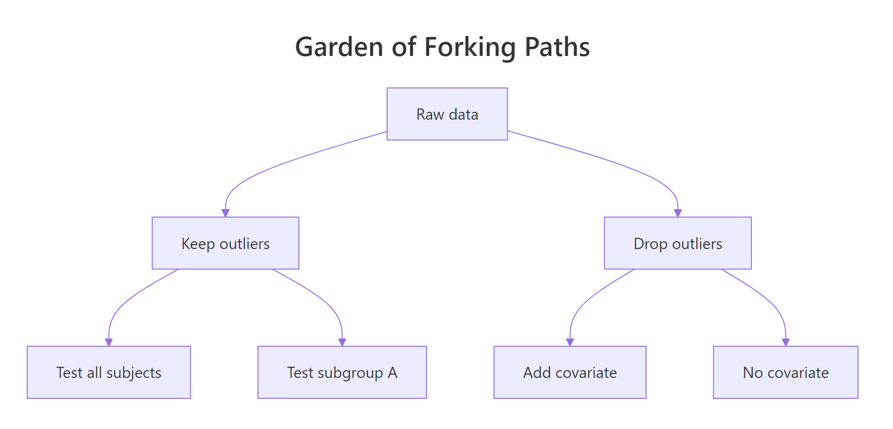
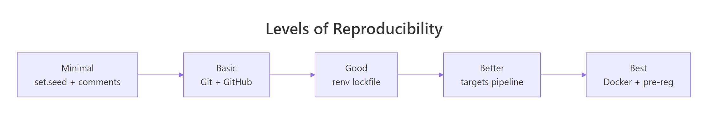
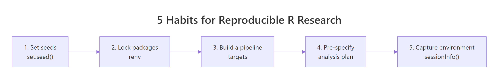

R and the Reproducibility Crisis: 5 Habits That Make Your Research Replicable
Only 36% of psychology studies in the largest replication project produced significant results when re-run, yet 97% of the originals had. The fix isn't more statistics. It's five concrete R habits any researcher can adopt today.
Why does the same dataset give five different p-values?
Before we discuss fixes, look at what the problem actually feels like in code. The "garden of forking paths" is the moment you realise the same dataset can yield wildly different p-values depending on small, defensible analysis choices. Once you see it, you cannot unsee it. Let's reproduce the effect with 50 rows of pure random noise, no real effect anywhere.
The block below generates noise, then computes five p-values from five reasonable analysis paths a researcher might try.
Look at the under_40 column. With one defensible filter, restrict to participants under 40, the p-value drops to 0.043 and crosses the magic 0.05 threshold. Nothing in the data is real. The noise just happened to align inside that subgroup. A motivated researcher trying enough paths will always find one that "works", and that single result is what gets published.

Figure 1: One dataset, six defensible analysis paths, and at least one will look "significant".
Try it: Change the seed to 7 to 42 in the block above and re-run. Count how many of the five p-values now fall under 0.05. The exercise drives home that the noise is doing the work, not the data.
Click to reveal solution
Explanation: The function rebuilds the noise dataset under a new seed and counts how many of three forks land under 0.05. Run it on a few seeds, you will see "significant" results appear and disappear with no underlying truth changing.
How does set.seed() lock down random results?
Habit one of the five is the easiest to adopt: every time your code uses randomness, simulation, train/test split, bootstrap, cross-validation, call set.seed() first. Without a seed, R's pseudo-random generator advances based on the system clock and process state, so two runs produce different numbers. With a seed, the generator starts from the same state and the same numbers come out.
The block below shows the effect side by side. The first two means come from un-seeded calls, the second two from seeded calls.
The unseeded means differ in the third decimal place. The seeded means are byte-identical. That difference is the entire point of habit one: a colleague who runs your code on the other side of the world should see the same number on the page, not a number that is "close enough".
42 everywhere is a habit, not a strategy. A unique seed per analysis (the date, the issue number, the participant ID) makes it clear which seed produced which result if you ever need to retrace your steps.Try it: Write a function ex_seeded_mean(seed) that returns the mean of 1000 standard normals seeded with the input. Call it twice with the same seed to confirm you get the same number.
Click to reveal solution
Explanation: Calling set.seed() inside the function resets the random stream every time, so the function is a pure mapping from seed to mean. Pure functions are the foundation of everything reproducible.
How does renv lock package versions?
A seed pins your randomness. Habit two pins your packages. Without it, the same lm() or glm() call can produce subtly different output a year later, because a dependency was updated and changed a default argument or a numerical routine. The renv package solves this by recording every package version your project uses into a renv.lock file that travels with your code.
renv itself is not pre-built for the in-browser R that powers this tutorial, but the fingerprint it captures is the same one sessionInfo() already prints. The block below shows what that fingerprint looks like, renv.lock stores a richer JSON version of the same idea.
That output is your minimum reproducibility receipt: the exact R version and the exact set of packages that were loaded when you ran the analysis. renv::snapshot() extends it by also recording the version number of every package and the repository it came from, so a collaborator running renv::restore() rebuilds the same library on their machine.
renv::init() → install packages → renv::snapshot() → commit renv.lock → collaborator runs renv::restore(). None of those commands need to run inside this tutorial; they belong in your real RStudio project.Try it: Pull just the R version string and the list of base packages out of sessionInfo() and store them in a small named list called ex_recipe.
Click to reveal solution
Explanation: A "recipe" is just a list of the smallest facts a future-you needs to recreate this run. Saving it next to your results means "I know what produced this number", the literal definition of reproducible.
What does a targets pipeline buy you that a script doesn't?
A long script re-runs everything every time. If your data load takes ten minutes and your model fits in two seconds, you wait ten minutes to tweak a plot. The targets package solves this by treating your analysis as a directed acyclic graph of pure functions: each step is a node, each node knows its inputs, and only the steps whose inputs changed get re-run.
You can model the same idea in base R with three pure functions and one dataset. The block below shows the pipeline mindset before introducing the package.
Each step takes one input and returns one output. None of them peek at global state. That property, pure inputs in, pure outputs out, is what lets targets reason about which nodes are stale. If you change clean_step, only clean_step and its descendants re-run. If you change a plot at the end, the model isn't refit. The script becomes a contract about what depends on what, instead of a wall of code that runs top to bottom.

Figure 2: Reproducibility is a spectrum, not a switch, pick the level your project needs.
Try it: Add a fourth pure function ex_describe() that takes the cleaned data and returns its row count plus the mean of mpg. Call it on clean_data.
Click to reveal solution
Explanation: Same shape as the other steps, one input, one output, no side effects. In a real targets pipeline you would add a tar_target(description, ex_describe(clean_data)) line and targets would track it as a node in the graph.
How do pre-specified plans stop p-hacking?
Habits one through four protect the computation. Habit five protects the human. Pre-specifying your analysis means writing down the test, the sample size, the outlier rule, and the hypothesis before you see the data. Once written, the plan is a commitment device: if the analysis later changes, you must label that change as exploratory.
The classic violation is "optional stopping", peeking at your data and stopping data collection the moment p drops below 0.05. The block below simulates 500 such studies under a true null effect and reports the false-positive rate.
The expected false-positive rate for a single t-test under the null is 5%. By peeking ten times and stopping the moment we see significance, we have inflated it to roughly 14%, almost three times what we promised the reader. There is no real effect anywhere in this code; the inflation is purely a consequence of the flexibility of stopping when you like the result.
Try it: Modify the simulation to use a fixed sample size of 100 and a single t-test. Compute the new false-positive rate and confirm it lands near 5%.
Click to reveal solution
Explanation: With a pre-specified n and a single test, the false-positive rate sits where it should, about one in twenty. The discipline isn't statistical; it is procedural. Decide first, then look.
Practice Exercises
These two capstones combine multiple habits from the tutorial. Use distinct variable names (my_*) so your exercise code does not overwrite anything from the lessons above.
Exercise 1: Build a reproducibility audit function
Write a function audit_reproducibility(seed_value, packages) that prints a four-item checklist:
- Whether the seed was set (always TRUE if
seed_valueis provided) - The R version from
sessionInfo() - The number of packages the user listed
- Today's date (use
Sys.Date())
Call it once with seed 2026 and a vector of packages you would use for a regression project.
Click to reveal solution
Explanation: The function is a checklist enforcer, it cannot make your code reproducible, but it makes it impossible to forget the steps. Drop a call to it at the top of every analysis script.
Exercise 2: Multiple-comparison correction
You ran 20 hypothesis tests. Three p-values landed under 0.05 (0.001, 0.023, 0.041); the other 17 are 0.30 each. Use p.adjust() to apply both the Bonferroni and Benjamini–Hochberg corrections, then report how many tests remain significant under each.
Click to reveal solution
Explanation: Of the three "significant" raw p-values, only the strongest (0.001) survives Bonferroni, which divides the threshold by 20. Benjamini–Hochberg controls the false discovery rate and is less conservative, but on this small example it also keeps only one. Multiple-testing correction is the single biggest defence against the kind of forking-paths inflation we showed in the first section.
Complete Example: A reproducible mini-analysis
The block below ties all five habits into one short analysis. Read it as a template, every line is here for a reproducibility reason, not just a statistical one.
The recipe_receipt object is the deliverable. It carries the seed (so anyone can re-run), the estimates and p-value (so anyone can verify), and the environment fingerprint (so anyone can diagnose if a different R version produces a different number). Save it next to your figures and your paper is computationally reproducible.
Summary

Figure 3: The five habits at a glance, adopt them in order.
| # | Habit | R Tool | One-line benefit |
|---|---|---|---|
| 1 | Set a unique seed before every random operation | set.seed() |
Same numbers on every machine |
| 2 | Lock package versions in a project lockfile | renv::snapshot() |
Same packages a year from now |
| 3 | Express analysis as a graph of pure functions | targets |
Re-runs only what changed; documents dependencies |
| 4 | Pre-specify the test, sample size and outlier rules | OSF / pre-analysis plan | Stops optional stopping and HARKing |
| 5 | Save an environment receipt next to results | sessionInfo() / renv.lock |
Anyone can diagnose differences |
References
- Open Science Collaboration (2015). Estimating the reproducibility of psychological science. Science, 349(6251). Link
- Gelman, A. & Loken, E. (2014). The Garden of Forking Paths. Columbia University. Link
- Ushey, K. renv: Project Environments for R. Posit / RStudio. Link
- Landau, W. M. The targets R Package User Manual. rOpenSci. Link
- CRAN Task View, Reproducible Research. R Project. Link
- Center for Open Science, Pre-registration. Link
- Marwick, B., Boettiger, C. & Mullen, L. (2018). Packaging Data Analytical Work Reproducibly. The American Statistician, 72(1). Link
- Wickham, H. & Grolemund, G. R for Data Science, 2nd Edition. Link
Continue Learning
- Data Ethics in R, the broader ethical framework around honest analysis
- Bias in Data and Models, how hidden assumptions shape the answers
- Communicating Uncertainty, how to report results honestly to a non-technical audience